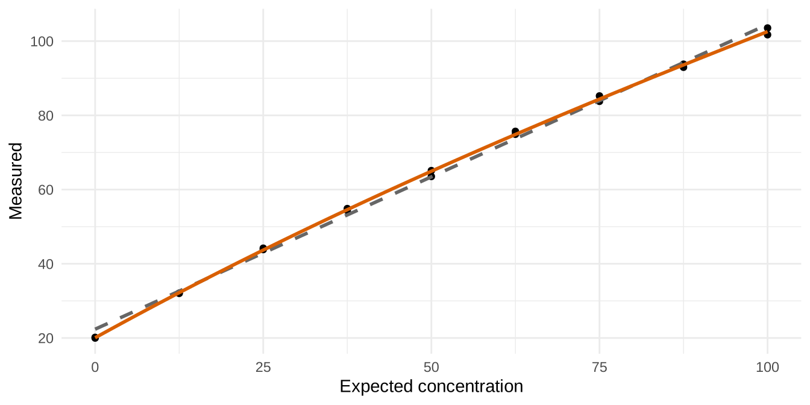

set.seed(17)
n_blank <- 60 # assumption, not a quoted requirement
blank <- rnorm(n_blank, mean = 0.5, sd = 0.40) # pg/mL
low_lv <- c(1.0, 1.5, 2.0, 2.5, 3.0); reps <- 12
low <- data.frame(level = rep(low_lv, each = reps))
low$y <- rnorm(nrow(low), low$level, 0.45)Day 3. Detection capability (EP17) and linearity (EP06)
Tags: [S] primary public source, [Y] my synthesis. All data below are simulated.
(a) Concept
| Term | Question it answers | Typical statement |
|---|---|---|
| LoB | Highest result expected from a blank | 95th percentile of blank results |
| LoD | Lowest concentration reliably distinguished from the LoB | ≥95% of results above the LoB |
| LoQ | Lowest concentration measured with acceptable error (CV or total-error goal) | CV ≤ goal, or bias + 1.96·SD ≤ allowable error |
| Linearity | Does response scale proportionally with concentration across the range? | polynomial vs linear fit; allowable deviation |
Two error types fix LoB and LoD: α = 5% false positive (blank above LoB), β = 5% false negative (low sample below LoB). [Y]
(b) Regulatory anchor
| Item | Fact | Tag |
|---|---|---|
| EP17 | EP17-A2 (2012, confirmed 2017); no newer edition listed. Evaluates and verifies LoB, LoD, LoQ claims | [S] clsi.org |
| EP06 | Ed2 (2020-11-24): low-cost linearity validation incl. LLoQ/ULoQ; two designs (high sample + measurand-free, or high and low samples) | [S] clsi.org |
| IVDR | Annex I 9.1(a) lists “limits of detection and quantitation, measuring range, linearity” | [S] |
| Design counts (EP17: blanks, lots, days; EP06 replicates) | not verified: paywalled. Simulation sizes below are my assumptions | – |
(c) R lab
Simulated study
LoB and LoD, parametric and nonparametric
lob_p <- lob_param(blank)
lob_np <- lob_nonparam(blank)
# pooled within-level SD of low samples
sd_low <- sqrt(mean(tapply(low$y, low$level, var)))
lod_p_check <- lob_p + 1.645 * sd_low
sd_low_lm <- sigma(lm(y ~ factor(level), low)) # pooled SD from an ANOVA fit
# Nonparametric LoD: lowest level whose results are >= 95% above the LoB
hit <- tapply(low$y > lob_np, low$level, mean)
lod_np <- as.numeric(names(hit)[which(hit >= 0.95)[1]])
kable(data.frame(
Quantity = c("LoB", "LoD"),
Parametric = round(c(lob_p, lod_p_check), 3),
Nonparametric = round(c(lob_np, lod_np), 3),
Formula = c("mean + 1.645·SD_blank", "LoB + 1.645·SD_low (pooled)")),
caption = "Detection capability (pg/mL)")| Quantity | Parametric | Nonparametric | Formula |
|---|---|---|---|
| LoB | 1.251 | 1.254 | mean + 1.645<U+00B7>SD_blank |
| LoD | 2.040 | 2.500 | LoB + 1.645<U+00B7>SD_low (pooled) |
kable(data.frame(level = names(hit), `fraction above LoB (np)` = round(as.numeric(hit), 3),
check.names = FALSE), caption = "Hit rate of low-level samples")| level | fraction above LoB (np) |
|---|---|
| 1 | 0.167 |
| 1.5 | 0.583 |
| 2 | 0.917 |
| 2.5 | 1.000 |
| 3 | 1.000 |
stopifnot(isTRUE(all.equal(sd_low, sd_low_lm))) # hand pooled SD = lm sigmaPlain 1.645 multipliers are the textbook parametric formulas; small-sample correction factors in EP17 are not verified: paywalled. [Y]
Cross-check of the parametric LoB by simulation
# Under normality the 95th percentile of the blank distribution is mean + 1.645 sd.
big <- rnorm(1e6, 0.5, 0.40)
c(theory = 0.5 + 1.645 * 0.40, big_sim_q95 = unname(quantile(big, .95)),
estimate_from_n60 = lob_p) theory big_sim_q95 estimate_from_n60
1.158000 1.157291 1.250696 Probit LoD (hit-rate design, molecular assays) [Y]
conc <- c(2, 4, 7, 10, 15, 25, 50); n <- rep(24, length(conc))
b1 <- 2.5; b0 <- qnorm(.95) - b1 * log10(10) # true LoD95 = 10
hits <- rbinom(length(conc), n, pnorm(b0 + b1 * log10(conc)))
fit <- glm(cbind(hits, n - hits) ~ log10(conc), family = binomial("probit"))
dp <- dose.p(fit, p = 0.95)
lod_dose <- 10^as.numeric(dp)
lod_hand <- lod_probit(conc, hits, n)
ci_log <- as.numeric(dp) + c(-1, 1) * 1.96 * attr(dp, "SE")
kable(data.frame(method = c("MASS::dose.p", "hand inversion"),
LoD95 = round(c(lod_dose, lod_hand), 2)))| method | LoD95 |
|---|---|
| MASS::dose.p | 7.15 |
| hand inversion | 7.15 |
cat(sprintf("Delta-method 95%% CI: %.1f - %.1f copies/mL (true value 10)\n",
10^ci_log[1], 10^ci_log[2]))Delta-method 95% CI: 5.3 - 9.7 copies/mL (true value 10)stopifnot(isTRUE(all.equal(lod_dose, lod_hand)))This is one realisation; a single 95% CI misses the truth about 1 time in 20. Coverage check over 1000 repeats of the same design:
set.seed(2024)
cover <- replicate(1000, {
h <- rbinom(length(conc), n, pnorm(b0 + b1 * log10(conc)))
f <- suppressWarnings(glm(cbind(h, n - h) ~ log10(conc), family = binomial("probit")))
d <- suppressWarnings(dose.p(f, p = 0.95))
r <- as.numeric(d) + c(-1, 1) * 1.96 * attr(d, "SE")
1 >= r[1] && 1 <= r[2] # log10(10) = 1
})
c(coverage = mean(cover))coverage
0.937 Parametric bootstrap of the LoD (my method)
Resample blank and low-level results from the fitted normals, recompute LoD, take percentiles.
set.seed(99)
B <- 4000
lod_b <- replicate(B, {
b <- rnorm(n_blank, mean(blank), sd(blank))
l <- rnorm(length(low_lv) * reps, 0, sd_low) # centred; only the SD enters
lob_param(b) + 1.645 * sd(l)
})
# Cross-check against the exact chi-square distribution of the pooled SD part:
# Var(SD_low*) approx; compare the bootstrap SE with the delta-method SE.
se_delta <- sqrt(sd(blank)^2 / n_blank +
1.645^2 * sd(blank)^2 / (2 * (n_blank - 1)) +
1.645^2 * sd_low^2 / (2 * length(low_lv) * (reps - 1)))
c(LoD_point = lod_p_check, boot_median = median(lod_b),
boot_CI_lo = unname(quantile(lod_b, .025)), boot_CI_hi = unname(quantile(lod_b, .975)),
boot_SE = sd(lod_b), delta_SE = se_delta) LoD_point boot_median boot_CI_lo boot_CI_hi boot_SE delta_SE
2.0396742 2.0359937 1.8172921 2.2430930 0.1092108 0.1124553 How to defend each (one paragraph). Parametric uses all observations and gives a smooth estimate with a CI, but rests on normality of blank and low-level results; check with a QQ-plot and consider a log scale if blanks are skewed. Nonparametric assumes nothing about the shape but is a coarse rank statistic: with 60 blanks the 95th percentile is determined by about three values and with 12 replicates per level the hit rate can only change in steps of 8%. Probit is the right tool when the outcome is hit/no-hit, as in qPCR. Parametric bootstrap is my uncertainty statement on the parametric LoD: it adds a CI and exposes how few df the SD of the low samples really has; it inherits the normality assumption and is not a CLSI-prescribed procedure. [Y]
LoQ from a precision profile
set.seed(5)
lv <- c(1, 2, 3, 5, 8, 12, 20); r <- 20
sd_true <- function(c) sqrt(0.30^2 + (0.06 * c)^2)
pp <- data.frame(level = rep(lv, each = r))
pp$y <- 1.03 * pp$level + rnorm(nrow(pp), 0, sd_true(pp$level)) # +3% proportional bias
s <- aggregate(y ~ level, pp, function(v) c(m = mean(v), s = sd(v)))
s <- data.frame(level = s$level, mean = s$y[, "m"], sd = s$y[, "s"])
s$cv <- 100 * s$sd / s$mean
s$total_error_pct <- 100 * (abs(s$mean - s$level) + 1.96 * s$sd) / s$level
kable(s, digits = 2, caption = "Precision profile; CV goal 20%, total-error goal 30% (assumed goals)")| level | mean | sd | cv | total_error_pct |
|---|---|---|---|---|
| 1 | 0.94 | 0.28 | 30.12 | 61.31 |
| 2 | 2.19 | 0.38 | 17.23 | 46.78 |
| 3 | 3.13 | 0.29 | 9.41 | 23.65 |
| 5 | 5.05 | 0.31 | 6.16 | 13.29 |
| 8 | 8.31 | 0.52 | 6.20 | 16.53 |
| 12 | 12.39 | 0.95 | 7.66 | 18.76 |
| 20 | 20.47 | 1.36 | 6.65 | 15.67 |
loq_cv <- s$level[which(s$cv <= 20)[1]]
loq_te <- s$level[which(s$total_error_pct <= 30)[1]]
# model-based: sd^2 = a^2 + b^2 c^2 by weighted lm on variances
m <- lm(I(sd^2) ~ 1 + I(level^2), s)
a2 <- coef(m)[1]; b2 <- coef(m)[2]
loq_model <- sqrt(a2 / (0.04 - b2))
c(LoQ_empirical_CV20 = loq_cv, LoQ_empirical_TE30 = loq_te, LoQ_model_CV20 = unname(loq_model))LoQ_empirical_CV20 LoQ_empirical_TE30 LoQ_model_CV20
2.000000 3.000000 1.375589 Linearity (EP06 style, polynomial comparison) [Y]
set.seed(8)
x <- rep(seq(0, 100, length.out = 9), each = 2)
mu <- 20 + x - 0.0018 * x^2 # mild saturation
y <- mu + rnorm(length(x), 0, 0.01 * mu)
chk <- linearity_check(x, y, degree = 3)
# hand F-test
lin <- lm(y ~ x); cub <- lm(y ~ poly(x, 3, raw = TRUE))
F_hand <- ((deviance(lin) - deviance(cub)) / 2) / (deviance(cub) / df.residual(cub))
c(F_function = chk$F, F_hand = F_hand, p = chk$p_nonlinear) F_function F_hand p
3.502025e+01 3.502025e+01 3.560210e-06 stopifnot(isTRUE(all.equal(chk$F, F_hand)))
kable(data.frame(level = names(chk$deviation_pct), deviation_pct = round(chk$deviation_pct, 2),
within_5pct = abs(chk$deviation_pct) <= 5),
caption = "Deviation of linear from cubic fit (allowable ±5%, assumed goal)")| level | deviation_pct | within_5pct | |
|---|---|---|---|
| 0 | 0 | 11.54 | FALSE |
| 12.5 | 12.5 | 1.33 | TRUE |
| 25 | 25 | -1.81 | TRUE |
| 37.5 | 37.5 | -2.59 | TRUE |
| 50 | 50 | -2.33 | TRUE |
| 62.5 | 62.5 | -1.54 | TRUE |
| 75 | 75 | -0.50 | TRUE |
| 87.5 | 87.5 | 0.67 | TRUE |
| 100 | 100 | 1.87 | TRUE |
df <- data.frame(x, y)
ggplot(df, aes(x, y)) + geom_point() +
geom_smooth(method = "lm", se = FALSE, colour = "grey40", linetype = 2) +
geom_smooth(method = "lm", formula = y ~ poly(x, 3), se = FALSE, colour = "#d95f02") +
labs(x = "Expected concentration", y = "Measured") + theme_minimal()
The F-test shows real curvature, but the decision uses the deviation limit: here only the lowest level exceeds ±5% (the straight line overshoots at the low end), so a defensible claim restricts the linear range to start above it and re-tests. A significant F-test alone is not a failure, and a non-significant one is not proof of linearity in a small study. [Y]
(d) Ten interview questions
show_questions(3, "../interview_questions.csv")Q1. Define LoB, LoD and LoQ and how they relate.
LoB = highest value expected from blank samples (95th percentile). LoD = lowest concentration distinguished from LoB with 95% probability. LoQ = lowest concentration meeting a predefined error goal (CV or total error). LoB < LoD <= LoQ. EP17-A2 (2012) is the CLSI document.
Q2. Write the parametric LoB and LoD.
LoB = mean_blank + 1.645 SD_blank; LoD = LoB + 1.645 SD_low (z for 5% one-sided error each). Plain formulas; EP17’s small-sample correction is not verified (paywalled).
Q3. When do you prefer the nonparametric LoB and what is its cost?
When blanks are skewed or bounded at 0 (common for signal-derived values). The 95th percentile of ranked blanks is distribution-free but rests on few observations; n = 60 gives about the 3rd largest value, which is noisy.
Q4.
The LoB is a decision limit (alpha). A true sample at LoD must exceed it 95% of the time, so its distribution must clear LoB by 1.645 SD_low (beta). If low-level SD is greater than blank SD, LoD rises beyond LoB + 1.645 SD_blank.
Q5.
For hit/no-hit outcomes (qPCR, qualitative): replicate dilution series, fit probit(p) = b0 + b1 log10(conc), LoD95 = 10^((1.645 - b0)/b1) with delta or bootstrap CI. Needs concentrations that bracket 95%; if all are above it the fit extrapolates.
Q6. How do you define LoQ?
Lowest level where a predefined goal is met: CV <= goal (functional sensitivity), or total error bias + 1.96 SD <= allowable error, using a precision profile across levels. The goal is clinical, not statistical, and must be set before the study.
Q7.
It shows the uncertainty from limited n (few df for the low-level SD) and propagates both parts. It does not fix non-normality, between-lot/day effects not in the sampling model, or choice of low-level samples. It is my method, not CLSI-prescribed.
Q8. How would you evaluate linearity?
Dilution series with replicates across the claimed range, fit linear and higher-order polynomial, test the extra terms, then judge the deviation of the linear fit from the best polynomial at each level against an allowable limit. Statistical significance is not equal to clinical relevance. EP06 Ed2 (2020) also supports LLoQ/ULoQ validation; exact designs not verified.
Q9. What design factors in LoB/LoD studies beyond number of replicates?
Multiple reagent lots, instruments and days so the SD reflects routine variability; blank matrix that matches patient samples; low-level samples made from patient pools. Specific counts are in EP17 (not verified: paywalled).
Q10. A claimed LoD is 1.9 pg/mL but the clinical cut-off is 220 pg/mL. Why does it matter little?
LoD matters when the decision level is near zero. At cut-offs far above LoD, precision and bias at the cut-off (EP05, EP09) matter more than detection capability.
(e) Claims
EP17-A2, EP06-Ed2 editions and scope, IVDR Annex I 9.1(a) are in the ledger. Design counts for EP17 and EP06: not verified: paywalled.